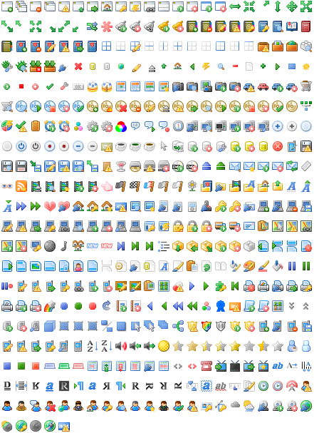

Mark James created a great set of 1,022 silky-smooth 16x16 true-colour
icons in PNG format, aptly named Silk Icons.
Damien Guard's set was fuelled by a need for a additional icons and variations in the same format.
He had hoped to create more original icons in the same style however time constraints meant that
majority of the 460+ icons are derivations and recompositions of the original set.
License
This work is published under the
Creative Commons Attribution 2.5 License by Damien Guard.
Source
These Icons come from http://damieng.com/creative/icons/silk-companion-1-icons
readme_companion (txt)
Icons

See also: FamFamFamContrib, DocumentGraphics, FamFamFamSilkIcons, FamFamFamFlagIcons, FamFamFamMiniIcons, FamFamFamMintIcons, FamFamFamSilkGeoSilkIcons